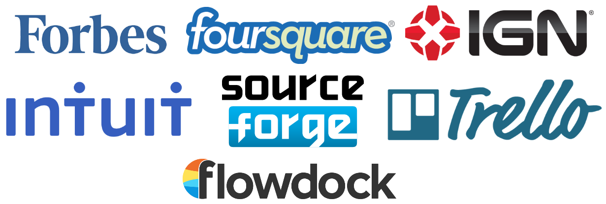
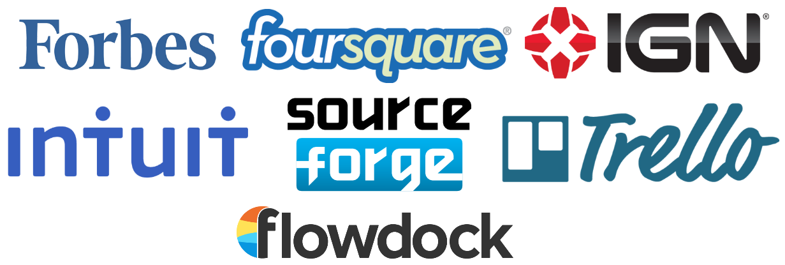

Using
MongoDB
as your primary
Django database
By Andre Medeiros at DjangoCon Finland 2013
Who?
Andre Medeiros
Founder at Iroquote.com
Next generation discussion forums
Brazilian that doesn't play soccer
M.Sc. from Aalto University
It's just a JSON datastore
fooman = {"name" : "Foo", "age" : 25};
db.users.save(fooman);
MongoDB is
Agile and Scalable
- Dynamic schemas
- Index on any attribute
- Auto-sharding
→ Popular NoSQL database


Why MongoDB for Django?
The “pythonic database”
dict ~ JSON
# Python
person = {
'name': "John Doe",
'skills': ["Javascript", "CSS", "HTML"],
'work': None
}
// Javascript
person = {
"name" : "John Doe",
"skills" : ["Javascript", "CSS", "HTML"],
"work" : null
};
Writing Python is fun, and keeping everything in Python limits the number of times your brain has to do a "context switch." It helps productivity if you keep yourself in a single programming environment/mentality for as long as possible.—Djangobook.com
(say bye to migrations)
If MongoDB had existed 10 years ago the vast majority of data used to drive modern web applications would be stored in MongoDB and not a relational database.—Will Shulman, CEO & Co-founder of MongoLab
Real world example
Comments and tagsembedded into discussion document
{
"_id" : ObjectId("5500165de50c050005e4b29f"),
"title" : "Using MongoDB as your primary Django database",
"message" : "This presentation introduces MongoDB to Django de...",
"author" : ObjectId("5182953ba50c051575e4b29c"),
"creation_date" : ISODate("2013-05-21T12:44:31.408Z"),
"tags" : ["django","python","mongodb","mongoengine","nosql"],
"comments" : [
{
"author" : ObjectId("50c90b3128650a004200961a"),
"message" : "Nice, I didn't know this was possible."
}
],
}
 with MongoDB
with MongoDB
At the core of Django is its ORM
MongoEngine
is an Object-Document Mapper made for MongoDB, following Django's ORM style.
pip install mongoengine==0.8.0
MongoEngine model
yourproject/models.py
from mongoengine import *
class Choice(EmbeddedDocument):
choice_text = StringField(max_length=200)
votes = IntField(default=0)
class Poll(Document):
question = StringField(max_length=200)
pub_date = DateTimeField(help_text='date published')
choices = ListField(EmbeddedDocumentField(Choice))
Translated to MongoDB...
{
"_id" : ObjectId("5483165de50c050005e4b29f"),
"question" : "What's up?",
"pub_date" : ISODate("2013-04-14T11:06:21.922Z"),
"choices" : [
{
"choice_text" : "Not much",
"votes" : 0
},
{
"choice_text" : "Just hacking again",
"votes" : 1
}
],
}
Querying and updating
yourproject/views.py
from yourproject.models import Poll, Choice
poll = Poll.objects(question__contains="What").first()
choice = Choice(choice_text="I'm at DjangoCon.fi", votes=23)
poll.choices.append(choice)
poll.save()
print poll.question
Setting indexes
yourproject/models.py
class Poll(Document):
question = StringField(max_length=200)
pub_date = DateTimeField(help_text='date published')
choices = ListField(EmbeddedDocumentField(Choice))
meta = {
'indexes': [
'question',
('pub_date', '+question')
]
}
The fun side
No
python manage.py syncdb
No database migrations
Freedom to hack
The painful side
Making Django ignore its
relational database components
Django, forget your databases
yourproject/settings.py
import mongoengine
DATABASES = {
'default': {
'ENGINE': '',
},
}
SESSION_ENGINE = 'mongoengine.django.sessions' # optional
Connect to MongoDB
yourproject/settings.py
_MONGODB_USER = 'mongouser'
_MONGODB_PASSWD = 'password'
_MONGODB_HOST = 'thehost'
_MONGODB_NAME = 'thedb'
_MONGODB_DATABASE_HOST = \
'mongodb://%s:%s@%s/%s' \
% (_MONGODB_USER, _MONGODB_PASSWD, _MONGODB_HOST, _MONGODB_NAME)
mongoengine.connect(_MONGODB_NAME, host=_MONGODB_DATABASE_HOST)
Use MongoEngine's User
yourproject/settings.py
AUTHENTICATION_BACKENDS = (
'mongoengine.django.auth.MongoEngineBackend',
)
yourproject/views.py
import mongoengine
# ...
user = authenticate(username=username, password=password)
assert isinstance(user, mongoengine.django.auth.User)
Hack the test runner
yourproject/tests.py
from django.test.simple import DjangoTestSuiteRunner
from django.test import TestCase
class NoSQLTestRunner(DjangoTestSuiteRunner):
def setup_databases(self):
pass
def teardown_databases(self, *args):
pass
class NoSQLTestCase(TestCase):
def _fixture_setup(self):
pass
def _fixture_teardown(self):
pass
yourproject/settings.py
TEST_RUNNER = 'yourproject.tests.NoSQLTestRunner'
Or use Mongorunner
https://github.com/xintron/django-mongorunner
MongoEngine is good
- Maintained and updated constantly by 10gen
- Solid and works like Django's ORM
- A replaceable component in Django
Alternative to MongoEngine
django-nonrel
Forked from Django 1.3
Supports MongoDB and Google App Engine
When NOT to use MongoDB
- You need ACID transactions
- You have a stable SQL database in production
- You need the most stable RDBMS you can get
Consider MongoDB when...
- You are starting a project with design freedom
- Your app has an evolving data schema
- Your want auto-sharding on a simple schema
- Your app has plenty of geospatial data
- You have high-volume traffic
- Your app works around a RESTful JSON API
Thank you
Questions?
Share Tweet